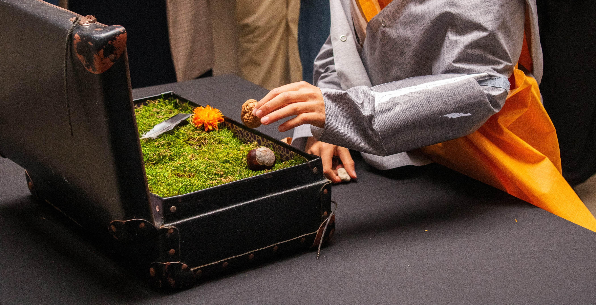
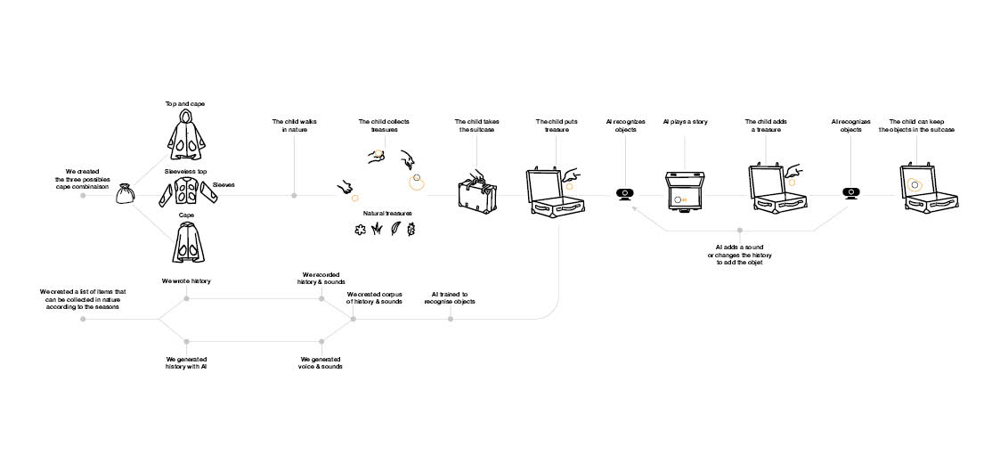
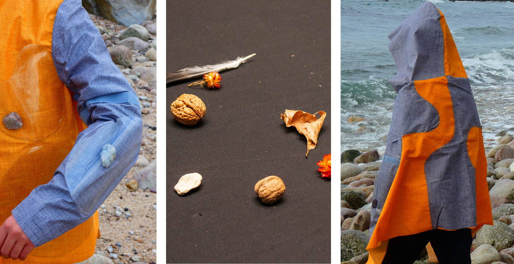

Au cours d'une promenade avec une cape au trésor pour collecter des éléments naturels, suivie d'une expérience sonore immersive via une valise interactive, les enfants explorent, écoutent et inventent des histoires dans lesquelles la nature devient le narrateur.


Grâce à l'intelligence artificielle et à l'implication des soignants et familles, ce projet encourage la créativité, la socialisation et la sensibilisation au monde vivant dans un environnement ludique et apaisant.